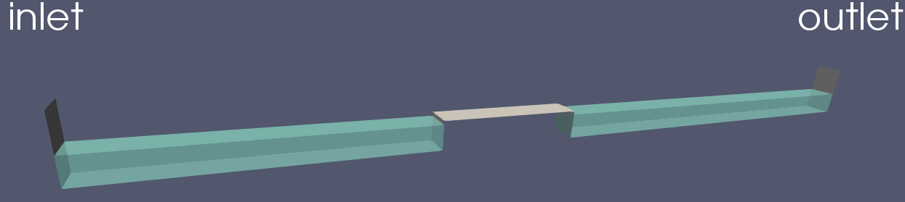

Mesure de pression sur un ouvrage¶
Ce tutoriel est destiné à la mesure de pression en un ou plusieurs points.
Description de la situation
On se place dans la même géométrie que pour le tutoriel de houle irrégulière. A cette géométrie, nous allons ajouter un obstacle rectangulaire, comme affiché sur la figure suivante.
Vous pouvez directement exécuter les scripts Allrun.case.turbulent ou
Allrun.case.laminaire, qui comprennent la suite de commandes à exécuter
pour lancer la simulation:
#!/bin/bash
# Lancer le maillage
Allmesh -c
# Générer l'obstacle
runApplication topoSet
runApplication subsetMesh c0 -patch obstacle -overwrite
# Générer la houle irrégulière
genHouleIrreguliere
# Charger le fichier de turbulence
cp constant/turbulenceProperties.turbulent constant/turbulenceProperties
# Lancer le calcul. L'option -s lance setFields
Allrun -s &
# Attendre 5 secondes avant de lancer le monitoring
sleep 5
# Suivre la progression du calcul et lancer la commande
# de lecture de sondes lorsque le calcul est terminé
AllpostProcess lireSondes.py lirePoints.py
traceSondes.py point1.csv
traceSondes.py line_probes.csv
Maillage
Le maillage est le même que pour le tutoriel de houle irrégulière. La
seule différence est l’ajout d’une condition limite vide dans le fichier system/blockMeshDict
obstacle
{
type wall;
faces ();
}
C’est le patch qui va contenir les face de l’obstacle. Lancez blockMesh avec la commande:
$ blockMesh
Pour définir les contours de l’obstacle, nous allons utiliser l’outil topoSet,
selon les paramètres indiqués dans system/topoSetDict
actions
(
{
name c0;
type cellSet;
action new;
source boxToCell;
sourceInfo
{
box (10 -99 -99) (15 99 1); // Edit box bounds as required
}
}
{
name c0;
type cellSet;
action invert;
}
);
On y trouve deux sections:
La première section permet de définir les contours du rectangle qui fera office d’obstacle. Pour cela, on va créer un objet
cellSet, que l’on nommec0. Le mot-cléboxToCellnous permet de sélectionner une « boîte » dont les coordonnées sont donnés dans le sous-dictionnairesourceInfo. Il ne faut indiquer que 2 points pour générer une boîte. Dans notre cas, notre boîte est de dimensions(5x198x100). Notez que certaines coordonnées sont très grandes ou très petites. En théorie, notre boîte n’est que de dimensions(5x1x1). Si l’on avait mis les coordonnées exactes avec les limites exactes de notre canal rectangulaire, il arrive parfois que l’outil ne sélectionne pas certains éléments du maillage à cause des erreurs de précision machine. Ainsi, si l’on veut sélectionner toute la largeur du canal par exemple, il est préférable d’indiquer des limites aberrantes telles que(-99,99)plutôt que les coordonnées exactes(-0.5,0.5).La deuxième section vient inverser la sélection des mailles sélectionnées par notre boîte, et remplace cette nouvelle sélection.
Lancez l’outil topoSet avec la commande:
$ topoSet
Maintenant, nous avons ajouté une zone de type cellSet nommée c0, mais il ne s’est encore rien
passé sur le maillage. Pour « découper » le maillage généré avec blockMesh, nous allons
utiliser l’outil subsetMesh, avec la commande:
$ subsetMesh c0 -patch obstacle -overwrite
La première option à indiquer est la zone
cellSetà découper dans le maillage.L’option
-patch <patch>permet d’ajouter les nouvelles faces crées à une condition limite. Dans notre cas, nous avons créé un rectangle, dont les faces sont des nouvelles conditions limites. Le patchobstaclecontient maintenant les faces de la boîte créée.L’option
-overwritepermet d’écrire le nouveau maillage par dessus le précédent.
Vous pouvez visualiser votre nouveau maillage sur ParaView.
Génération de houle
La condition de houle est la même que pour le tutoriel de houle irrégulière.
Lancement de la simulation
Si vous le souhaitez, vous pouvez utiliser un modèle de turbulence. Pour cela,
utilisez le script Allrun.case.turbulent ou lancez la commande:
mv constant/turbulenceProperties.komega constant/turbulenceProperties
En faisant cela, vous allez utiliser le modèle de turbulence \(k-\omega\) SST.
N’oubliez pas de copier le fichier 0.orig vers un nouveau dossier 0 et de
lancer setFields, pour initialiser une hauteur d’eau de \(0.864\,m\):
cp -r 0.orig 0
setFields
En plus des sondes, nous avons rajouté un point de mesure de pression :
points
{
type sets;
libs ("libsampling.so");
enabled true; // Mettre à false pour désactiver les sondes
// Contrôle d'écriture :
// - timeStep : pas de temps
// - adjustable : temps (si pas de temps adaptatif)
// - runTime : temps (si pas de temps constant)
writeControl timeStep;
writeInterval 2;
fixedLocations false;
interpolationScheme cellPoint;
setFormat raw;
sets
(
point1
{
type cloud;
axis distance;
points
(
(10 0 1)
);
}
);
fields
(
p
);
}
Pour donner un point de mesure dans OpenFOAM, il faut d’abord donner un set de mesures,
puis des sous-dictionnaires avec notre nuage de points de type cloud. Par exemple, le nom
du set ci-dessus est points, et le nom du nuage de points est point1. Ainsi,
si l’on veut spécifier plusieurs points, il y a deux façons de le faire: en ajoutant un
set avec un autre cloud (par exemple, point2), ou alors ajouter un autre point
dans la liste des points du cloud de point1. Dans le premier cas, les
résultats pour points1 et points2 seront écrits dans deux fichiers différents.
Dans le deuxième cas, les points seront écrits dans les même fichiers, ce qui facilite le
traitement des données.
Note
Vous pouvez aussi rajouter un nouveau sous-dictionnaire sur le modèle du set points. Dans
ce cas, les données seront écrites dans des dossiers différents.
Post-traitement
Un fois que la simulation est lancée, vous pouvez la surveiller avec le
script AllpostProcess. En options, vous pouvez y ajouter des scripts
que vous voulez exécuter. Dans notre cas, nous allons exécuter le fichier
de lecture des mesures de pression avec lirePoints.py, ainsi
que le fichier de lecture de mesures de sondes lireSondes.py. Puis nous afficherons
les deux signaux générés
AllpostProcess lireSondes.py lirePoints.py
traceSondes.py point1.csv
traceSondes.py line_probes.csv